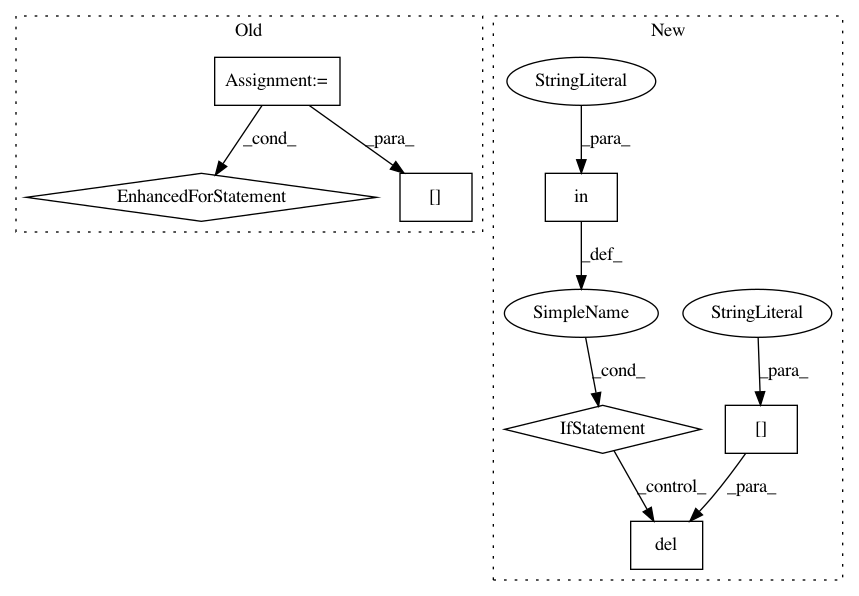

529c4bc269f6c3a265d49b97393cbc6ecbcf5f94,python/hypertools/plot/plot.py,,plot,#Any#,26
Before Change
categories = list(set(np.sort(point_colors)))
x_stacked = np.vstack(x)
x_reshaped = [[] for i in categories]
for idx,point in enumerate(point_colors):
x_reshaped[categories.index(point)].append(x_stacked[idx])
x = [np.vstack(i) for i in x_reshaped]
if "style" in kwargs:
sns.set(style=kwargs["style"])
After Change
////HYPERTOOLS-SPECIFIC ARG PARSING////
if "n_clusters" in kwargs:
n_clusters=kwargs["n_clusters"]
if "ndims" in kwargs:
ndims = kwargs["ndims"]
else:
ndims = 3
cluster_labels = get_clusters(x, ndims, n_clusters)
x = reshape_data(x,cluster_labels)
del kwargs["n_clusters"]
if "point_colors" in kwargs:
warnings.warn("n_clusters overrides point_colors, ignoring point_colors.")
del kwargs["point_colors"]
// handle point_colors flag
if "point_colors" in kwargs:
point_colors=kwargs["point_colors"]
del kwargs["point_colors"]
In pattern: SUPERPATTERN
Frequency: 3
Non-data size: 7
Instances
Project Name: ContextLab/hypertools
Commit Name: 529c4bc269f6c3a265d49b97393cbc6ecbcf5f94
Time: 2016-12-22
Author: andrew.heusser@gmail.com
File Name: python/hypertools/plot/plot.py
Class Name:
Method Name: plot
Project Name: jaakkopasanen/AutoEq
Commit Name: 5798262e2f9d254f37cbe762f89747b7049a8acc
Time: 2020-10-18
Author: jaakko.o.pasanen@gmail.com
File Name: measurements/crinacle/crinacle_crawler.py
Class Name: CrinacleCrawler
Method Name: get_urls
Project Name: ContextLab/hypertools
Commit Name: 7c2673280add4356814a56e5a4253bd959630e95
Time: 2016-12-22
Author: andrew.heusser@gmail.com
File Name: python/hypertools/plot/plot.py
Class Name:
Method Name: plot